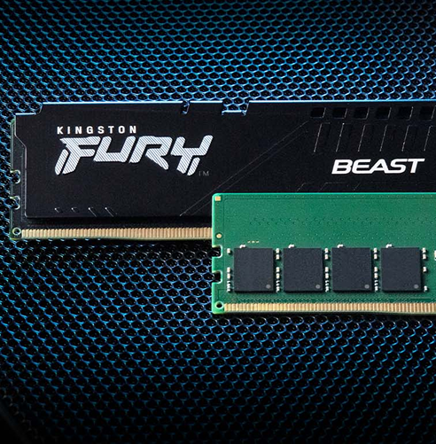
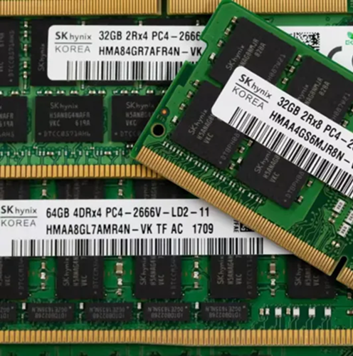

Standard Tecnologici
La RAM non è universale: ogni generazione ha una "chiave" fisica diversa e non è retrocompatibile. La scelta dipende esclusivamente da cosa supporta la tua CPU e la tua Scheda Madre.

DDR SDRAM (Desktop & Laptop)
Double Data Rate. È lo standard de facto. Attualmente siamo in una fase di transizione tra la quarta e la quinta generazione.
- DDR4: Ancora validissima per budget build. Frequenze tipiche tra 3200-3600 MHz.
- DDR5: Il nuovo standard. Porta la gestione energetica (PMIC) direttamente sul banco, frequenze oltre i 7000 MHz e correzione errori (ECC) on-die integrata.

LPDDR (Low Power)
Variante a basso voltaggio per dispositivi mobili, tablet e ultrabook moderni (come i MacBook o i laptop Intel Evo). Sacrifica la modularità per l'efficienza.
- Saldatura: I chip sono saldati sulla scheda madre per ridurre le distanze e il consumo. Non aggiornabile.
- Efficienza: In standby consuma una frazione rispetto alla DDR standard.

HBM (High Bandwidth Memory)
Una tecnologia esotica dove i chip di memoria sono impilati verticalmente (3D Stacking) e posizionati vicinissimi al processore su un "interposer" di silicio.
- Velocità Folle: Bus ultra-largo (1024-bit o più) che permette un passaggio dati massiccio.
- Uso: Esclusivo di GPU professionali/AI e Server. Troppo costosa per i PC domestici.